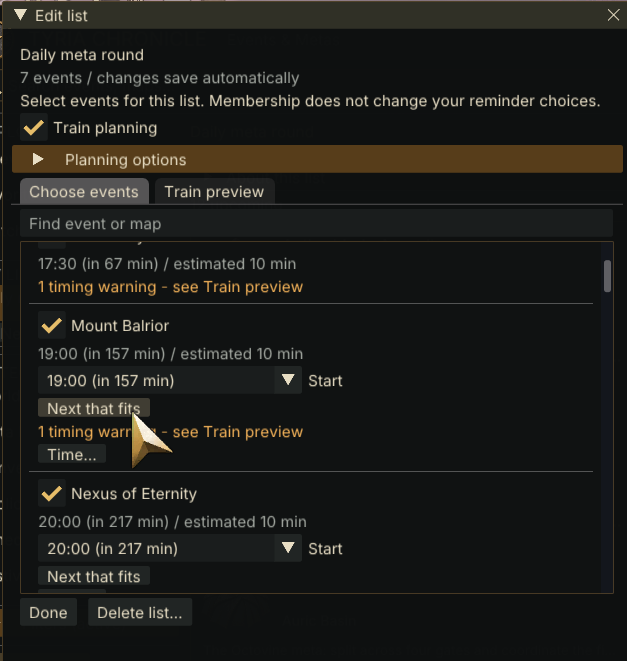
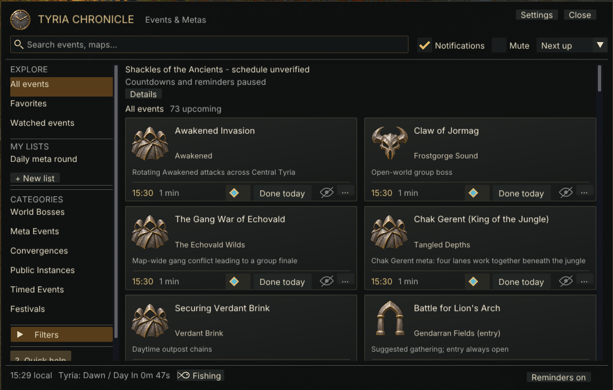
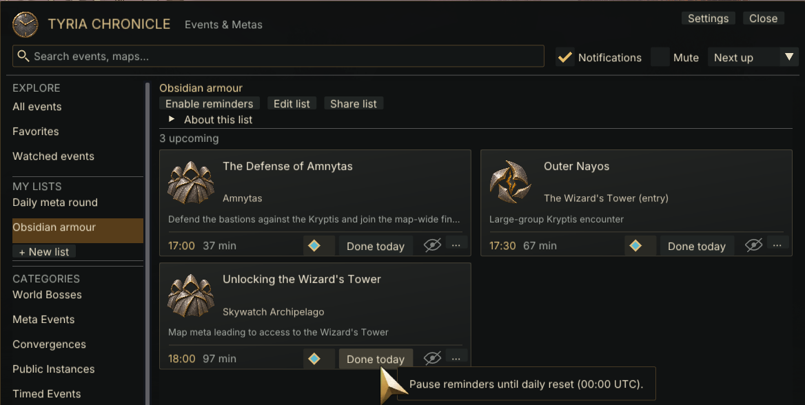
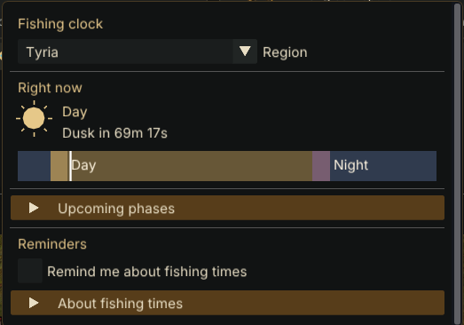
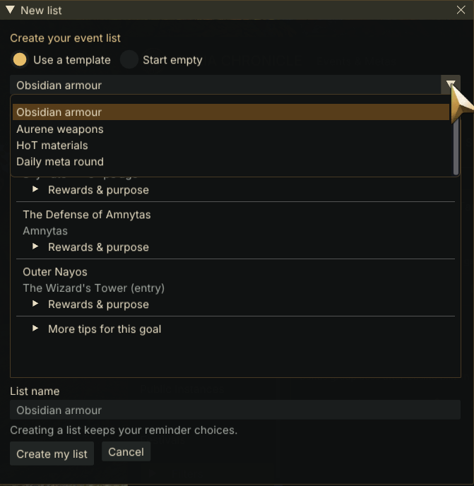
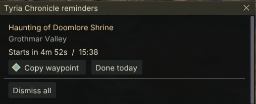

MADE FOR YOUR TIME IN TYRIA
Your adventures.
Your own plan.
Bring event schedules, personal lists and reminders together inside Guild Wars 2. Choose the events that matter to you, prepare on your terms and keep track of your goals.
Windows x64 · Requires Raidcore Nexus · No GW2 API key
YOUR ADVENTURES. YOUR OWN PACE.
YOUR EVENTS. YOUR GROUP. YOUR PACE.
Available in 0.2.15
Build your own
meta train.
Choose the events you want to run, select later starts or use Next that fits, and bring them together into a personal route.
- See the shape of your evening. Preview your route in time order, with chosen starts saved per list.
- Leave room to move. Set a margin for changes between different maps.
- Fill the gaps. Find events for this gap suggests curated community-route stops that fit your estimates. Review overlaps and short map-change gaps.
Planning uses estimated schedule windows, not measured completion times. Adjust timings for your group. Chosen starts are saved per list and used by Share list. Reminders and the main timeline keep their normal schedules.
Read the train planning guide →
LESS KEEPING TRACK. MORE EXPLORING.
A little order.
A world of possibilities.
Build personal event lists, set a reminder time for each event and mark your daily progress. Plan a meta train with chosen starts and suggestions for the gaps.
Be there for the next one.
Browse scheduled events with maps, short explanations and waypoints. Search and narrow your view.
Explore events ↗02 / REMINDERSA nudge, when it matters.
Choose reminders by category or event. Mark Done today and give yourself room for something new.
Set up reminders ↗03 / FISHINGCatch the right moment.
Follow Dawn, Day, Dusk and Night. Choose your region and get optional reminders before a phase.
Read the fishing guide ↗04 / PERSONAL LISTSBig goals. Small steps.
Build your own lists or start with farming templates for Obsidian armour, Aurene weapons and more.
Organize your goals ↗05 / SHARINGGood adventures are better shared.
Copy an event or an entire event train with start times and waypoints, ready to paste into game chat.
Learn about sharing ↗THE SAME CHRONICLE. A CLEARER VIEW.
Your plans,
beautifully in view.
Readable event cards, familiar waypoint controls and your own lists. Aged metal symbols and warm gold accents keep the interface familiar, from your event list to your next reminder.
App interface · 0.2.14 design
Explore the event guide →
A CLOSER LOOK
Meet your companion.
Explore the released interface, personal goal lists and train planning. Get the latest public beta below. The version and download links follow published GitHub releases automatically.




YOUR NEXT ADVENTURE STARTS HERE
Bring a little Chronicle
to your Tyria.
Public beta 0.2.24 · Published 14 November 2026
Install Raidcore Nexus separately. Choose the release asset, not “Source code”.
Browse all releases and checksums ↗BUILT TOGETHER, ONE BETA AT A TIME
Your feedback belongs here.
Found a problem? Have an idea? Join the conversation.